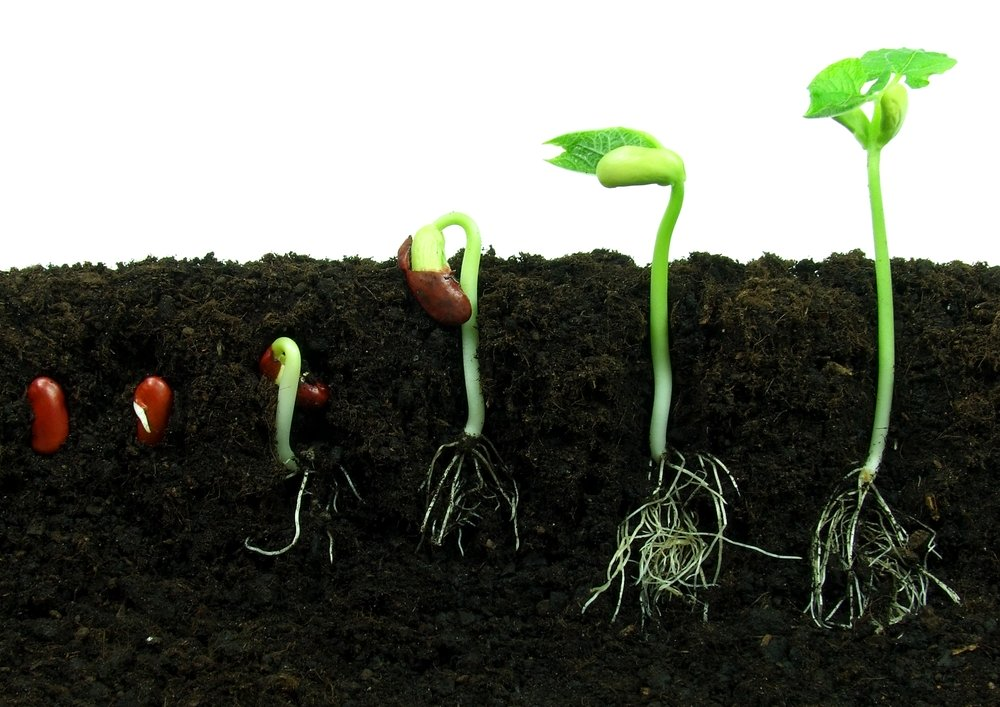

How to Grow from Seed

Here's a list of steps to grow plants from seeds.
1. Place Seeds in a cup of water (mixed with a drop of hydrogen peroxide, or better yet Dragon's Blood Sap) for 14-18 hours which sends a direct message to the seeds to sprout, increasing the amount of seeds to sprout and reduces the time by a few days vs. placing directly into soil. (You can tap on the seeds that are floating to see if they sink, signifying that they've absorbed enough water. (optional: if seeds are large enough you can cut a small slit into the side of the seed to help the seed sprout)
2. Use this water to wet a paper towel and fold seeds into this paper towel for 1 day.
3. Plant seeds in soil using this Planting Tray - $33.99 (with the dome is more money, but helps to keep the sprouts humid). Soil should contain:
A. 90 minerals (from rock dust - volcanic sulfur and oceanic iodine)
Azomite - $19.99
Sea-90 - $10.99
B. compost (fermented food scrapes for nitrogen and healthy bacteria which converts the rock dust into an absorbable form for the plants to eat) - make your own or buy:
Worm Castings - $17.03
Azos - $22.51 (not necessary if you've made your own compost)
C. mushroom / fungus mycelium / spores which also converts rock dust into a bio-available form for the plants to use.
Rhizophagus irregularis - $25.39
D. water retention (instead of perlite or vermiculite or peat moss, use coconut coir - $17.89
or mulch from untreated wood chip)
Total Cost: $91.29
4. After sprouts are visible above the soil (about a week), remove the dome and use grow lights 14-16 hours per day. (Relying only on indirect sunlight from a window isn't ideal since the days are shorter, the sun is weaker in the spring than summer, and the sprouts will try to extend to get closer to the light, causing weaken stems). T5 fluorescent lights are suppose to perform better than blue spectrum LED, but be careful of not burning the leaves from the heat.
6. Roots begin to form once "true leaves" start to appear. The first set of leaves are called "cotyledon" leaves. If planting in a small 72 cell flat, after 1-2 weeks from seeing the sprout it may be time to transplant into a bigger pot before week 4.
5. After about 6 weeks (dependant upon the plant) Transplant outside after the last day of frost in your location. But one week beforehand, begin to "harden" the plants by bringing them outside during the day to get used to the variance in temperatures and bringing them in at night. On the first day only have them outside 3-4 hours, then increase this by 1-2 hours each following day. Healthy bugs and worms aerate the soil and produce more compost.